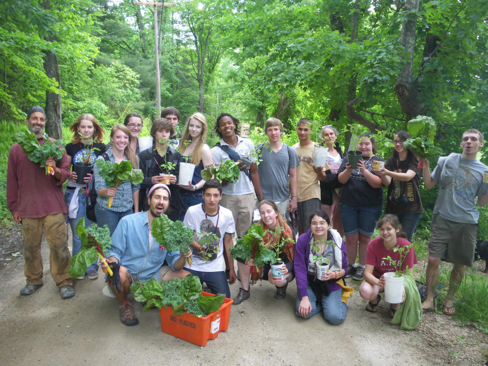

Seeds of Solidarity
Grow Food Everywhere
Home

Seeds of Solidarity Education Center is a non-profit organization based in Orange MA that innovates programs to awaken the power among people of all ages–from toddlers to teens to people who are incarcerated– to Grow Food Everywhere to transform hunger to health, and create resilient lives and communities. The organization is based on a solar-powered farm which uses agroecological methods regenerate soil, restore climate, and build community food resilience. Seeds of Solidarity is a co-founder of the North Quabbin Garlic and Arts Festival, an event that ignites regional art, and economy while zero-waste- producing only two bags of trash for 10,000 people.
We created a really inspiring Resilience Postcard to have and share, that was included in our annual appeal mailing. Take a peek at the postcard and our letter to you. Anyone can make a tax-deductible, secure donation on-line anytime– and gifts of any amount are deeply valued and meaningful.
If you would like to receive The Resilience Postcard by mail to have and share, contact us
New Book!
We are excited to announce the publication of Making Love While Farming: A Field Guide to a Life of Passion and Purpose, by Seeds of Solidarity founders Ricky Baruch and Deb Habib. It is now available from Levellers Press! Check out MakingLoveWhileFarming.org for description, praise, interviews and book release events with more being added every week (with signed copies available at every author event). You can follow MakingLoveWhileFarming on FB and Instagram too.
Regenerate soil, restore climate and revitalize community. Peruse archived newsletters rich with ideas and inspiration. DIY with our NEW Video on the No-till Cardboard Method. Get Info on our events like our Solidarity Saturday visiting days and Grow Food Everywhere workshops. Enjoy reading ‘Farming in Solidarity,’ a Huffington Post interview with Seeds of Solidarity founders Ricky Baruc and Deb Habib as well as many other free resources and publications. Enjoy a youth made video that shows a day in the life of our SOL Garden program for teens. With your enthusiastic, heart-felt reviews, we are a Top Non-Profit by greatnonprofits.org. Read our 5-star reviews. We are truly grateful for your interest in our organization.